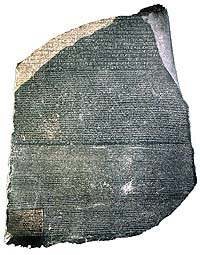

The Rosetta Stone
The Rosetta Stone
is part of a granitoid stela, originally about six feet in height which
was set up in March, 196 BC. It is a copy of a decree passed by a general
council of priests which assembled at Memphis on the first anniversary
of the coronation of Ptolemy V Epiphanes, king of all Egypt. The text
concerns the honours bestowed on the king by temples of Egypt in return
for services rendered by him to Egypt both at home and abroad. Priestly
privileges, especially those of an economic nature, are listed in detail.
The stone was discovered in 1799 when some French soldiers in Napoleon's
army were digging the foundations of an addition to a fort near the town
of Rashid (Rosetta) in the Nile delta. The stone was subsequently ceded
to the British government by the terms of the treaty of Alexandria in
1801 and has been exhibited in the British Museum since 1802.
The immediate importance of the Rosetta Stone lay in the fact that the
Egyptian hieroglyphic text was accompanied by the Greek translation which
could be read. A third inscription on the stone was written in Demotic,
a cursive script developed late in Egyptian history and used in most cases
only for secular documents. Thus the stone displayed the same text in
three scripts, but only two languages, Egyptian and Greek.
The Egyptians used the hieroglyphic script for nearly 3,500 years, beginning
in about 3300 BC until the end of the fourth century AD. At about the
start of the third century AD, the Egyptians began to write their languages
in a script composed of the Greek alphabet, to which were added seven
characters derived ultimately from hieroglyphs. In this form the language
came to be known as Coptic, a corruption of the Greek word for 'Egypt',
Aiguptios. Knowledge of how to read and write the hieroglyphic
script was probably lost soon after it had been superseded and no key
to its meaning was found until the discovery of the Rosetta Stone.
The Greek inscription was used by scholars as the key to the decipherment
of the hieroglyphs in the first section. Thomas Young, the English Physicist,
was the first to prove that the elongated ovals or cartouches in the hieroglyphic
section of the stone contained a royal name written phonetically, in this
case that of Ptolemy. The French scholar J-F Champollion went on to correct
and enlarge Young's list of phonetic hieroglyphs and lay the foundations
of our knowledge of the ancient Egyptian language in a paper read to the
Académie des Inscriptions et Belles-lettres in Paris in 1822.
The Rosetta Stone
is exhibited at the southern entrance to the Egyptian Sculpture Gallery
(Room 4).
>> What does the Rosetta Stone Say?
|

|